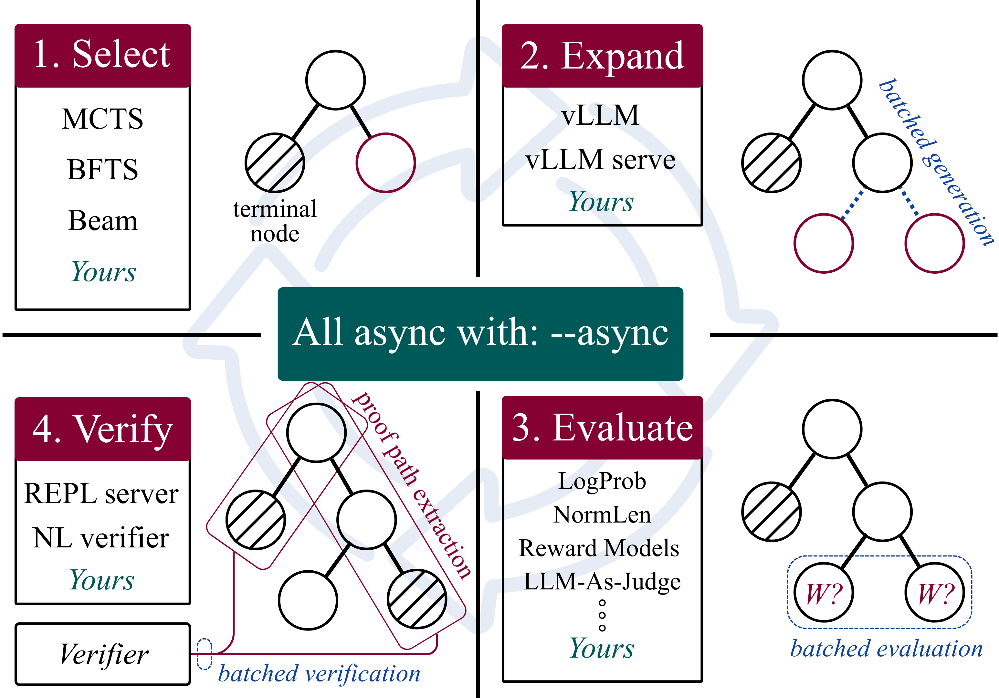

Modular tree-search library integrating Lean 4 via REPL for neural theorem proving, evaluated on miniF2F alongside Rocq and Isabelle.
Abstract
Tree search algorithms enable systematic exploration of the proof space in neural theorem proving. Existing LLM tree search libraries primarily target natural language reasoning and do not provide native integration with formal verifiers, while theorem proving systems often rely on task-specific search implementations. We introduce TreeThink, an open-source Python library for modular, fully asynchronous tree search in neural theorem proving. It integrates established tree search methods with vLLM-based inference pipelines and diverse node evaluation techniques, ranging from lightweight heuristics to neural evaluators. We support Lean 4, Rocq, and Isabelle/HOL alongside natural language. It connects directly to each language's Read-Eval-Print Loop (REPL) server for real-time verification and proof state extraction. We evaluate TreeThink on miniF2F and MATH500, demonstrating cross-language formal proof search, natural language reasoning support, and up to 6.3$\times$ wall-clock speedup from asynchronous execution. Source code is released under the MIT license at https://github.com/GGLAB-KU/treethink , and the library is accessible as a downloadable package at https://pypi.org/project/treethink/ .
Problem
Existing LLM tree-search libraries target natural-language reasoning without native formal verifier integration, while formal theorem-proving systems rely on task-specific search implementations. There is no reusable, multi-language, asynchronous tree-search infrastructure for neural theorem proving.
Approach
TreeThink is an open-source Python library providing modular, fully asynchronous tree search decoupled into interchangeable search algorithms (BFS, Beam, MCTS variants), heterogeneous node evaluators, and vLLM-backed policies. It connects to each language's REPL server for real-time verification and proof-state extraction, supporting Lean 4, Rocq, and Isabelle/HOL as well as natural language. It includes proof caching, batched inference, and graph visualization.

Figure 1: NTP tree search process. 1. Select: search method selects a node using a search algorithm. 2. Expand : the policy LLM generates child nodes. 3. Evaluate : evaluator strategy scores the generated nodes. W stands for the value assigned to a node. 4. Verify : external systems verify the correctness of the proof. Main operations in individual sections are in red while batched processes are i
Results
On miniF2F, tree search improved pass rates over pass@1 across all three languages (Lean 49.4% to 57.4% with RF-MCTS). Asynchronous execution yielded up to 6.3x wall-clock speedup, and on MATH500 RF-MCTS reached 40.0% versus 23.0% single-pass.